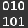

Quelques sites pour plus de commandes.
Vim
1.Qu'est-ce que Vim ?
2.Quelques commandes de bases.
tuteurs.ens.fr
dominique.fournier38.fr
tnerual.eriogerg.free.fr
vim-fr.org
vim.rtorr.com
© 2015 Alexis